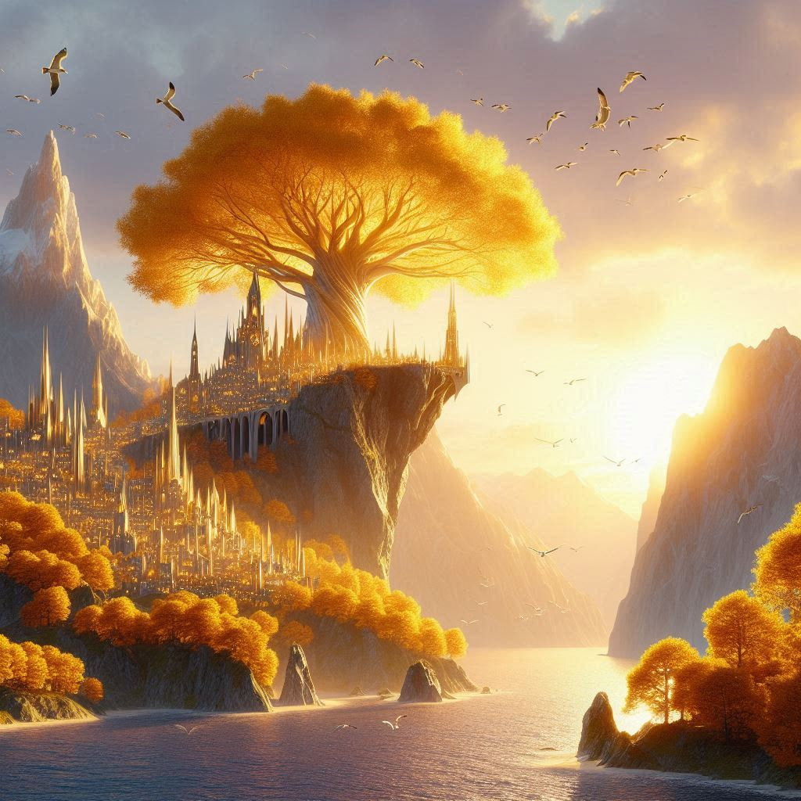
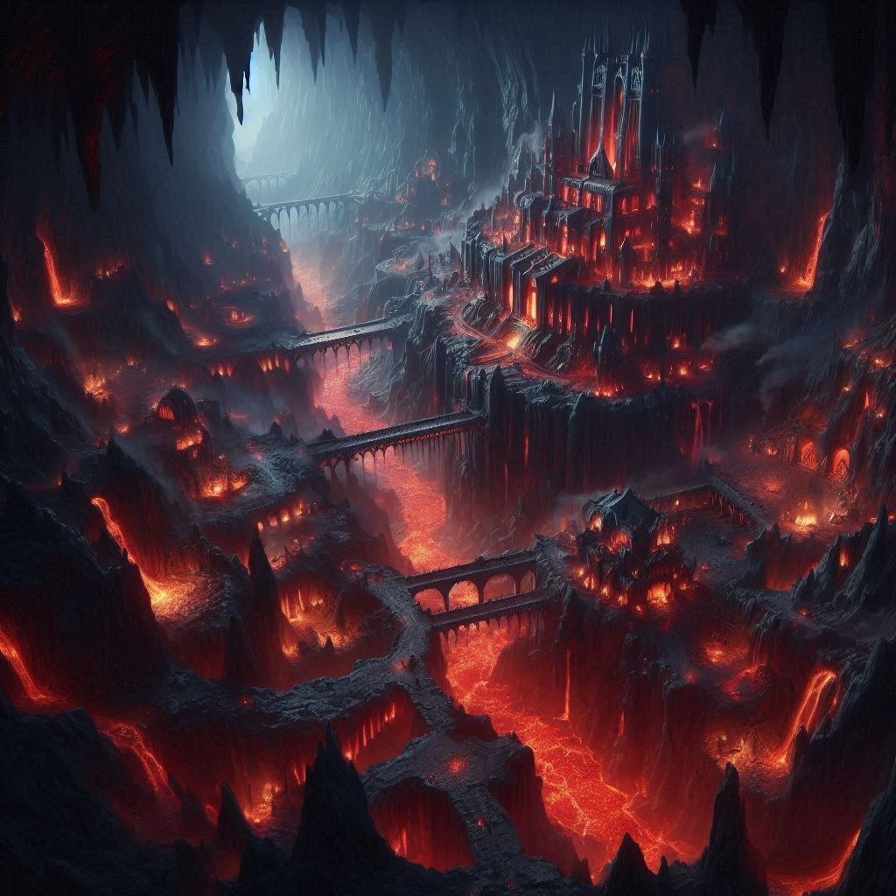
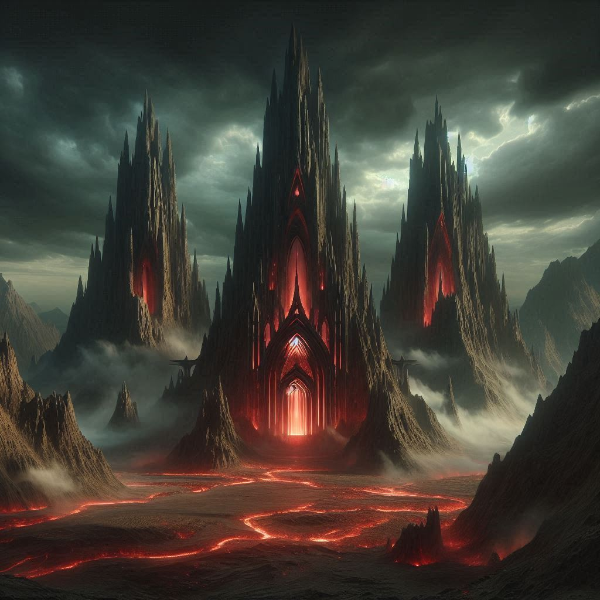
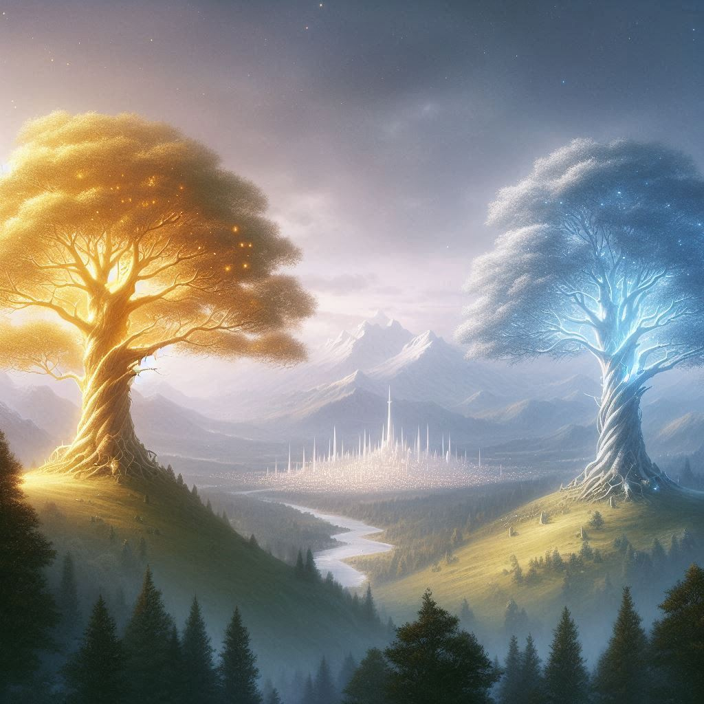
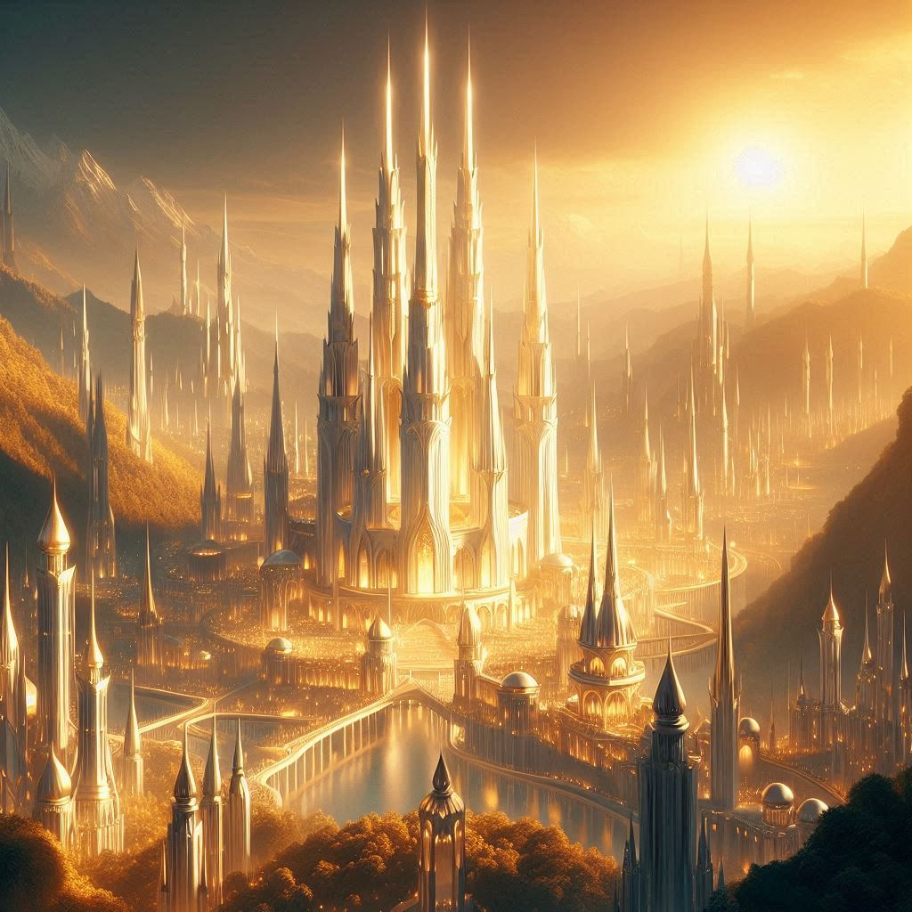
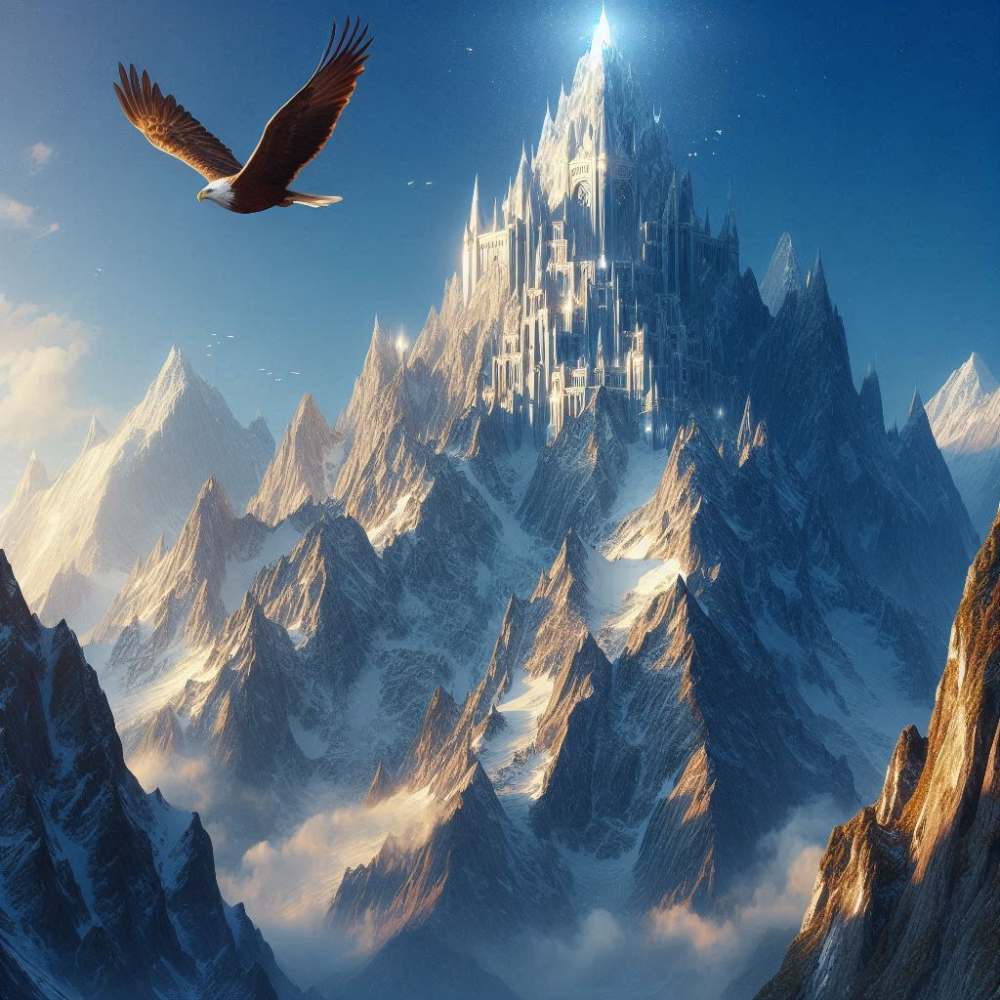
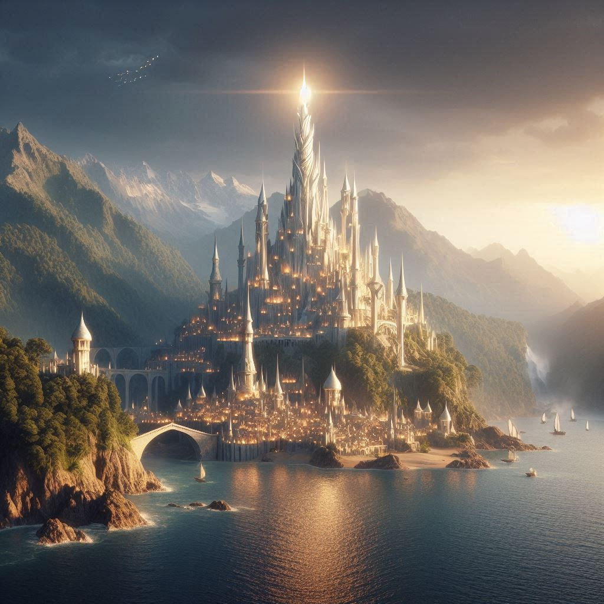

La città nascosta di Gondolin. Ultima dimora degli elfi nel Beleriand.

Lindon. Città principale degli elfi nella Terra di Mezzo e dimora dell'Alto Re Gil-Galad.

Angband. La fortezza sotterranea di Morgoth

Thangorodrim. I 3 picchi a guardia delle terre di Morgoth.

Laurelin e Telperion. I 2 alberi di Valinor.

Valmar. Capitale di Valinor e dimora dei Valar.

Taniquetil. La Montagna Sacra è il monte più alto di Valinor. Dimora di Manwë e Varda, re e regina dei Valar. La montagna è anche dimora delle grandi acquile.

Tirion. La città di Tirion a guardia del passo che dai Monti Pelori porta al Reame Beato di Valinor. Si dice che i marinai che si spingono molto ad Ovest riescano a scorgere la luce del suo faro argentato all'orizzonte